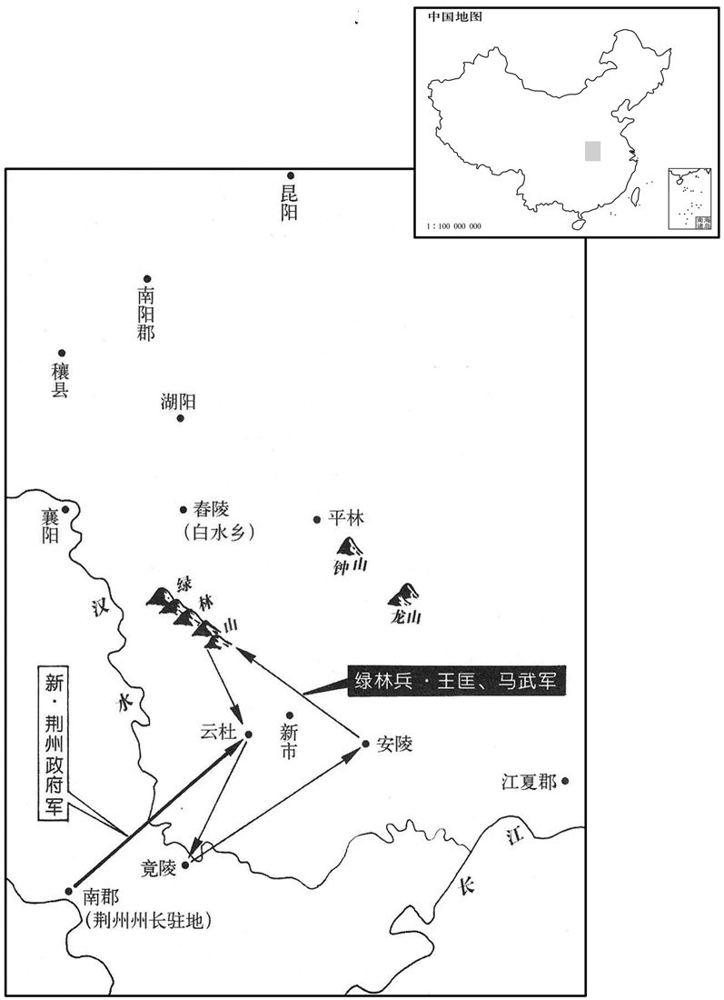

公元21年资治通鉴：本年记事、原文与白话对照
按原书编年位置阅读；追叙和史论不等于本年发生的事件。白话采用所据译本，缺译不以生成译文补齐。
卷38 · 本年记事
公元21年 · 汉孝平皇帝地皇二年
二年〔（辛巳、二一）〕
本年事件索引（现代整理）
春，正月，莽妻死，谥曰孝睦皇后。初，莽妻以莽数杀其子，〔数，所角翻。莽杀子获见三十四卷哀帝建平二年，通鉴书于三十五卷元寿元年；杀子宇见三十六卷平帝元始三年。〕涕泣失明；莽令太子临居中养焉。〔养，余亮翻。〕莽妻旁侍者原碧，莽幸之，临亦通焉；恐事泄，谋共杀莽。临妻愔，国师公女，〔师古曰：愔，音一寻翻。〕能为星，语临宫中且有白衣会，〔晋书天文志：木与金合，为白衣之会。土与金合，亦为白衣之会。言宫中者，以所会之舍占而知之。语，牛倨翻。〕临喜，以为所谋且成；后贬为统义阳王，出在外第，愈忧恐。会莽妻病困，临予书曰：〔予，读曰与。〕「上于子孙至严，前长孙、中孙年俱三十而死。〔宇，字长孙；获，字中孙；获先死，安得俱年三十乎！长，知两翻。中，读曰仲。〕今臣临复适三十，诚恐一旦不保中室，则不知死命所在！」〔李奇曰：中室，临之母也。晋灼曰：长乐宫中殿也。师古曰：二说皆非也。临自言欲于室中自保全，不可得耳。复，扶又翻；下同。〕莽候妻疾，见其书，大怒，疑临有恶意，不令得会丧。既葬，收原碧等考问，具服奸、谋杀状。莽欲秘之，使杀案事使者司命从事，埋狱中，〔司命从事，司命之属官也。〕家不知所在。赐临药；临不肯饮，自刺死。〔刺，七亦翻。〕又诏国师公：「临本不知星，事从愔起。」愔亦自杀。
春季，正月，王莽的妻子去世，谥号为孝睦皇后。当初，王莽的妻子由于王莽几次杀死了她的儿子，器瞎了眼睛。王莽让太子王临住在宫中照顾她。王莽奸淫了妻子身边的侍女原碧，后来王临也跟她通奸，恐怕事情泄漏，两个人便计划一同杀死王莽。王临的妻子刘，是国师公的女儿，会观察星象，告诉王临宫中将会有白衣之会。王临喜悦，以为自己计划的事会成功。后来被贬降作统义阳王，又被打发到外面的宅第居住，更加忧虑恐惧。当王莽的妻子病得厉害的时候，王临给她一封信说：“皇上对于子孙极为严厉，从前我的哥哥长孙和仲孙都是三十岁的年纪就死了。现在我又刚好三十岁，恐怕一旦母后有什么不幸，我就不知道会死在哪里！”王莽来探望妻子的病情，看见了那封信，大怒，怀疑王临有恶意，不让他参加丧礼。安葬结束逮捕原碧等审问，原碧完全承认了通奸、谋杀等情况。王莽想要掩盖这件事，派人杀死了奉命办案的司命及属官，尸体埋在狱中，死者家里都不知所在。赐给王临毒药，王临不肯喝，自杀而亡。王莽又命令国师公说：“王临本来不懂得星象，事情是从刘发端的。”刘也自杀了。
是月，新迁王安病死。初，莽为侯就国时，〔哀帝初，莽就国；元寿元年，召还京师。〕幸侍者增秩、怀能，生子兴、匡，皆留新都国，以其不明故也。〔师古曰：言侍者或与外人私通所生子，不可分明也。〕及安死，莽乃以王车遣使者迎兴、匡，封兴为功修公，匡为功建公。
本月，新迁王王安病故。当初，王莽为列侯去到封国的时候，宠爱侍女增秩、怀能，生下儿子王兴、王匡，都留在新都国，这是因为他们身份不明的缘故。等到王安死了，王莽才派遣使者用王车把王兴、王匡接来，封王兴为功公，王匡为功建公。
卜者王况谓魏成大尹李焉曰：〔莽改魏郡曰魏成。〕「汉家当复兴，李氏为辅。」因为焉作谶书，合十余万言。〔因为，于伪翻。〕事发，莽皆杀之。
占卦先生王况对魏成大尹李焉说：“汉会复兴，姓李的人将当辅佐大臣。”遂替李焉编写谶书共有十多万字。事情败露，王莽把二人都杀了。
莽遣太师羲仲景尚、〔莽以太师主春，其属置羲仲官。〕更始将军护军王党〔诸将军皆置护军。〕将兵击青、徐贼，国师和仲曹放助郭兴击句町，〔莽以国师主秋，故置和仲。句町，音劬挺。〕皆不能克。军师放纵，百姓重困。〔重，直用翻。〕
王莽派遣太师羲仲景尚、更始将军护军王党，率领军队攻打青州和徐州的盗贼，国师和仲曹放帮助郭兴攻击句町，都不能够取胜。军队胡作非为，百姓更加困苦。
莽又转天下谷帛诣西河、五原、朔方、渔阳，每一郡以百万数，欲以击匈奴。须卜当病死，莽以庶女妻其子后安公奢，〔莽女捷，侍者开明所生也，以妻奢。李奇曰：奢，本为侯，莽以女妻之，故进爵为公。妻，七细翻。〕所以尊宠之甚厚，终欲为出兵立之者。〔师古曰：言为此计意不止。为，于伪翻；下同。〕会莽败，云、奢亦死。
王莽又转运全国的粮食、丝帛前往西河郡、五原郡、朔方郡和渔阳郡，每一郡以百万计，想要用去攻打匈奴。这时须卜当因病去世，王莽把他的庶女嫁给须卜当的儿子后安公须卜奢，因为最终要用武力送他回匈奴即位，所以对他尊荣宠爱都很深厚。当王莽败亡的时候，栾提云、须卜奢也在中原去世。
秋，陨霜杀菽，关东大饥，蝗。
秋季，严霜伤害豆类庄稼，函谷关以东发生大饥馑，蝗虫成灾。
莽既轻私铸钱之法，犯者愈众，及伍人相坐，没入为官奴婢；其男子槛车，女子步，以铁琐琅当其颈，传诣〔【章：十二行本「诣」下有「长安」二字；乙十一行本同；退斋校同。】〕锺官以十万数。〔师古曰：琅当，长琐也。锺官，主铸钱之官也。〕到者易其夫妇。〔师古曰：改相配匹，不依其旧也。〕愁苦死者什六七。
王莽减轻私自铸钱的处罚后，犯法的就更多了，加上邻居连坐，都被收作官府的奴婢。其中男子坐囚车，妇女步行，用铁锁链套住他们的脖子，前往铸钱的官府，以十万计。到达后拆散夫妻，另行改配，愁苦而死的十有六七。
上谷储夏自请说瓜田仪降之；〔储夏，人姓名。战国时，齐有储子。〕仪未出而死。莽求其尸葬之，为起耱、祠室，谥曰瓜宁殇男。〔此殇，非未成人之殇，强死者也。楚辞所谓国殇者。〕
上谷人储夏自动请求去劝说瓜田仪归降。瓜田仪还没有出发就死了。王莽要来他的尸体进行安葬，给他修建坟墓和祠庙，赐谥号瓜宁殇男。
闰月，丙辰，大赦。
闰八月，丙辰（二十七日），大赦天下。
郎杨成修献符命，〔姓阳成，名修，而官为郎也。〕言继立民母；又曰：「黄帝以百二十女致神仙。」〔汉儒言天子三夫人、九嫔、二十七世妇、八十一御妻，则亦百二十女。〕莽于是遣中散大夫、谒者各四十五人，〔百官志：中散大夫秩六百石。时属司中。〕分行天下，〔行，下孟翻。〕博采乡里所高有淑女者上名。〔上，时掌翻。〕
郎官阳成进献符命，说应当再立皇后，又说：“黄帝靠着一百二十个女子成了神仙。”王莽于是派遣中散大夫和谒者各四十五人分别巡视全国，广泛选取被邻里所推崇的有淑女的人家，送上名册。
莽恶汉高庙神灵，〔恶，乌路翻。〕遣虎贲武士入高庙，四〔【章：十二行本「四」上有「拔剑」二字；乙十一行本同；孔本同；张校同；退斋校同。】〕面提击，〔师古曰：谓梦见谴责。提，掷也，音徒计翻。〕斧坏户牖，〔师古曰：以斧斫坏之。坏，音怪。〕桃汤、赭鞭鞭洒屋壁，〔师古曰：桃汤洒之，赭鞭鞭之也。赭，赤也。〕令轻车校尉居其中。〔汉以虎贲校尉主轻车。此轻车校尉，莽所置也。〕
王莽对汉高祖刘邦祭庙的神灵深为厌恶，派虎贲武士到刘邦祭庙，用武器四面掷击，用斧子砍坏门窗，用桃木汤浇洒墙壁，用土红色鞭子抽打墙壁，让轻车较尉住在里面。
是岁，南郡秦丰聚众且万人；平原女子迟昭平亦聚数千人在河阻中。〔姓谱：迟，姓也，樊迟之后，以王父字为氏。一曰：古贤人迟任之后。〕莽召问群臣禽贼方略，皆曰：「此天囚行尸，命在漏刻。」〔言其得罪于天，死在须臾；其猖狂为盗，特尸行耳。〕故左将军公孙禄征来与议，〔师古曰：与，读曰豫。〕禄曰：「太史令宗宣，〔宗姓，晋伯宗之后。伯宗本出于宋桓公。〕典星历，候气变，以凶为吉，乱天文，误朝廷；太傅平化侯尊，饰虚伪以偷名位，贼夫人之子；〔夫，音扶。〕国师嘉信公秀，〔「信」，当作「新」。〕颠倒五经，毁师法，令学士疑惑；明学男张邯、地理侯孙阳，造井田，使民弃土业；〔邯，下甘翻。〕羲和鲁匡，设六筦以穷工商；说符侯崔发，阿谀取容，令下情不上通；宜诛此数子以慰天下！」又言：「匈奴不可攻，当与和亲。臣恐新室忧不在匈奴而在封域之中也。」莽怒，使虎贲扶禄出，〔禄之言则直矣，然以汉旧臣而与莽朝之议，出处语默，于义得乎！事君若龚胜者可也。〕然颇采其言，左迁鲁匡为五原卒正，以百姓怨诽故也；六筦非匡所独造，莽厌众意而出之。〔师古曰：厌，满也，音一艳翻。〕
这一年，南郡人秦丰聚集部众将近一万人。平原郡女子迟昭平也在黄河之畔的险要地区聚集了几千人。王莽召集群臣询问捉拿盗贼的方略，群臣都说：“这些都是触犯天的罪犯，行走的死尸，活不多久了。”原左将军公孙禄应召来议事，他说：“太史令宗宣掌管星象历法，测候天气，把匈险的征象当作吉利的征象，扰乱天文，贻误 朝廷。太傅、平化侯唐尊用虚伪的言行来窃取名誉地位，害了人家的子弟。国师、嘉信公刘秀颠倒《五经》，毁坏了经师的家法，造成学士思想混乱。明学男张邯和地理侯孙阳制作井田制，使得民众丧失土地产业。羲和鲁匡设立六管制度，使得手工业者和商人陷入走投无路的困境。说符侯崔发吹牛拍马来取悦讨好，弄得下情不能上达。应当处死这几个人来安慰天下！”又说：“匈奴不可以攻打，应当跟他们和亲。我恐怕新朝的忧患不在匈奴，而在国家内部。”王莽大怒，让虎贲武士搀扶公孙禄走了。然而采纳了他的一些意见，把鲁匡降职去作五原郡卒正，因为老百姓怨恨抨击鲁匡。六管制度并不是鲁匡一个人搞起来的，王莽为了满足众人的愿望而把他抛弃。
初，四方皆以饥寒穷愁起为盗贼，稍〔【章：十二行本重「稍」字；乙十一行本同；孔本同。】〕群聚，常思岁熟得归乡里，众虽万数，不敢略有城邑，〔【章：十二行本「邑」下有「转掠求食」四字；乙十一行本同；孔本同；张校同；退斋校同。】〕日阕而已；〔师古曰：阕，尽也；随日而尽也。此言群盗攻剽所得，日给口体而已。阕，空穴翻。〕诸长吏牧守皆自乱�之L而死，〔师古曰：中，伤也，音竹仲翻。〕贼非敢欲杀之也，而莽终不谕其故。〔师古曰：不晓此意也。〕是岁，荆州牧发奔命二万人讨绿林贼；贼帅王匡等相率迎击于云杜，〔贤曰：云杜，县名，属江夏郡，故城在今复州沔阳县西北。杜佑曰：安州应城县，汉云杜县地。〕大破牧军，杀数千人，尽获辎重。〔重，直用翻。〕牧欲北归，马〔【章：十二行本「马」上有「贼」字；乙十一行本同；张校同；退斋校同。】〕武等复遮击之，〔复，扶又翻。〕鹆牧车屏泥，〔屏泥，缇油饰之，在轼前。〕刺杀其骖乘，〔刺，七亦翻。乘，绳证翻。〕然终不敢杀牧。贼遂攻拔竟陵，〔贤曰：竟陵，县名，属江夏郡；故城在郢州长寿县南。〕转击云杜、安陆，〔贤曰：安陆县，属江夏郡；今安州县。〕多略妇女，还入绿林中，至有五万余口，州郡不能制。又，大司马士按章豫州，〔师古曰：有上章相告者，就而按治之。豫州部颍川、汝南、沛郡、梁国、鲁国。〕为贼所获，贼送付县。士还，上书具言状。〔还，从宣翻；又如字。〕莽大怒，〔【章：十二行本「奴」下有「下狱」二字；乙十一行本同；孔本同。】〕以为诬罔，因下书责七公曰：〔七公，谓四辅、三公。〕「夫吏者，理也。宣德明恩，以牧养民，仁之道也。抑强督奸，〔师古曰：督，谓察视也。〕捕诛盗贼，义之节也。今则不然。盗发不辄得，至成群党遮略乘传宰士。〔传，知恋翻。〕士得脱者又妄自言：『我责数贼：「何为如是﹖」〔数，所具翻。〕贼曰：「以贫穷故耳。」贼护出我。』今俗人议者率多若此。惟贫困饥寒犯法为非，大者群盗，小者偷穴，〔师古曰：穴，谓穿墙为盗也。〕不过二科；今乃结谋连党以千百数，是逆乱之大者，岂饥寒之谓邪！七公其严敕卿大夫、卒正、连率、庶尹、谨牧养善民，急捕殄盗贼！有不同心并力疾恶黠贼，〔恶，乌路翻。黠，下八翻。〕而妄曰饥寒所为，辄捕系，请其罪！」〔请治其罪也。〕于是群下愈恐，莫敢言贼情者，州郡又不得擅发兵，贼由是遂不制。〔言不可制也。〕
起初，各地人民都由于饥寒贫苦才起来做盗贼，众人聚集在一起，时常盼望着年景好时能够返回家园。聚众虽然以万计，但不敢攻占城市，劫掠到食物，当天吃完而已。各县长官和州牧、郡太守都是自己乱斗被武器杀伤而死的，盗贼并不敢存心杀死他们，可是王莽始终不懂得这个道理。这一年，荆州牧动员称做奔命的部队二万人攻击绿林贼寇，贼寇首领王匡等率部众在云杜迎战，大破州府官军，杀数千人，把所有的军用物资全部掳获。荆州牧准备向北撤退，绿林将领马武等再予截击，钩住荆州牧车上挡泥的装饰板，刺杀在车上陪乘的人。然而，却始终不敢杀害州牧。贼寇于是攻陷竟陵，转而袭击云杜、安陆，大量掳掠妇女，退回绿林山中。此时已增加到五万余人，州郡官府已无法制止。此外，有个大司马的属吏到豫州办案，被盗贼俘虏了，盗贼把他送交县里。此人回来后，上书详细报告情况。王莽大怒，认为这是诬蔑欺骗。于是下文告责备四辅、三公道：“吏的意思就是管理。宣扬德政，彰明恩泽，去管教养育人民，这是仁政的原则。压制豪强，督察奸邪，逮捕诛杀盗贼，这是正义的节操。而今却不是这个样子。盗贼发生了，总是不能够逮捕，直到结成大帮大伙，拦劫乘坐传车的官吏。官吏脱了身的，又妄自说‘我曾谴责盗贼：“为什么干这种事？”回答说：“是因为贫穷的缘故。”盗贼还护送我出来。’现在庸俗的人谈论事情多是这样。想想看，由于贫困饥寒，犯法胡作非为，大的是一伙人去抢劫，小的是一个人去偷窃，不过这样两类。现在竟然谋划结党，人数以千百计算，这是大规模的叛乱，难道是饥寒可以解释得了的吗？四辅、三公应当严肃告诫卿大夫、卒正、连率和各庶尹，认真管教抚养善良的平民，迅速捉拿歼灭盗贼。如有人不同心合力，不憎恨狡猾的盗贼，而胡说他们是由于饥寒所迫才这样干的，就逮捕监禁，查办罪行！”于是官吏们更加惶恐，没有谁敢说盗贼的真实情况，州和郡又不能擅自调动军队，盗贼因此无法制服。

唯翼平连率田况素果敢，发民年十八以上四万余人，授以库兵，与刻石为约；焚崇等闻之，不敢入界。况自劾奏；〔劾，户僙翻。〕莽让况：「未赐虎符而擅发兵，此弄兵也，厥罪乏兴。〔师古曰：擅发之罪，与乏军兴同科也。〕以况自诡必禽灭贼，故且勿治。」〔治，直之翻；下同。〕后况自请出界击贼，所向皆破。莽以玺书令况领青、徐二州牧事，〔玺，斯氏翻。〕况上言：「盗贼始发，其原甚微，部吏、伍人所能禽也；〔部吏，部盗贼之吏，郡贼曹、县游徼、乡亭长之类是也。师古曰：伍人，同伍之人，若今伍保者也。〕咎在长吏不为意，县欺其郡，郡欺朝廷，实百言十，实千言百。朝廷忽略，不辄督责，遂至延蔓连州，〔师古曰：延，音弋战翻。〕乃遣将帅，多使者，传相监趣。〔传，知恋翻。监，古衔翻。师古曰：趣，读曰促。〕郡县力事上官，应塞诘对，〔师古曰：力，勤也。塞，当也。塞，悉则翻。诘，去吉翻。〕共酒食，具资用，以救断斩，〔师古曰：交惧斩死之刑也。共，读曰供。断，丁管翻，又丁乱翻。〕不暇复忧盗贼、治官事。〔复，扶又翻。治，直之翻。〕将帅又不能躬率吏士，战则为贼所破，吏气浸伤，徒费百姓。前幸蒙赦令，贼欲解散，或反遮击，恐入山谷，转相告语；〔语，牛倨翻。〕故郡县降贼皆更惊骇，恐见诈灭，因饥馑易动，〔降，户江翻。易，以豉翻。〕旬日之间更十余万人，此盗贼所以多之故也。今洛阳以东，米石二千，窃见诏书欲遣太师、更始将军；二人爪牙重臣，多从人众，道上空竭，〔言牢禀不给也。〕少则无以威示远方。宜急选牧、尹以下，明其赏罚，收合离乡；小国无城郭者，〔小国，诸列侯国也。〕徙其老弱置大城中，积臧谷食，〔臧，读曰藏。〕并力固守。贼来攻城，则不能下；所过无食，势不得群聚；如此，招之必降，击之则灭。今空复多出将帅，〔复，扶又翻。〕郡县苦之，反甚于贼。宜尽征还乘传诸使者〔传，知恋翻。〕以休息郡县；委任臣况以二州盗贼必平定之。」莽畏恶况，〔畏恶其能也。恶，乌路翻。〕阴为发代，〔为，于伪翻。〕遣使者赐况玺书。使者至，见况，因令代监其兵，〔监，古衔翻。〕遣况西诣长安，拜为师尉大夫。况去，齐地遂败。
只有翼平郡连帅田况一向果断勇敢，他发动年龄在十八岁上以上的民众四万多人，发给他们库存的武器，把军令刻在石碑上向他们宣布。樊崇等听说了，不敢进入郡界。田况自动弹劾自己，王莽责备田况：“没有发给虎符而擅自调集军队，这是擅动干戈，这种罪过与耽误军事调动一样。因为你自己保证一定捉拿消灭盗贼，所以姑且不予处分。”后来田况自动请求越过郡界攻打盗贼，他所攻击的盗贼都被打败了。王莽用诏书命令田况代理青州和徐州两州牧的职务。田况奏报说：“盗贼刚起事，他们的基础很薄弱，当地的治安官吏和邻里相保的伍人就能捉拿得了。责任在于县府主要官吏不在意，县欺骗郡，郡欺骗朝廷，实际上有一百人，只说十人，实际上有一千人，只说一百人。朝廷忽略，不及时进行督察，给予责罚，终于发展到蔓延几州，才派遣将帅，多派出使者，层层督促。郡县忙着服事上司，应付责问检查，供给酒饭，准备物资和费用，来解救自己的死罪，没有工夫去忧虑盗贼和办理公事。将帅又不能亲自率领官兵去冲锋陷阵，一交战就被盗贼打败，士气逐渐低落，徒然耗费了老百姓的钱财。前次幸而得到了赦免的命令，盗贼打算解散，有人反而加以截击，他们惶恐地退入山谷，辗转相告，所以各郡县已经投降的盗贼都更加惊骇，害怕被欺骗和消灭，由于饥荒时期人心容易动摇，十来天的时间，又是十多万人，这就是盗贼所以众多的缘故。现在洛阳以东地区，米价每石值两千钱。我看见诏书，说要派遣太师和更始将军前来，他们两人是权威的武臣，一定会多带人员，沿途民穷财尽，将无法供给，而如果随从人员太少，则无法用来威震远方。应当迅速在州牧、大尹以下挑选官吏，明确规定对他们的赏罚，让他们收集分散的乡聚和没有城堡的小封国，把它们的老弱居民迁移安顿到大城里，储积粮食，合力坚守。盗贼来攻城，就不能攻下，所经过的地方没有粮食，势必不能群集。这样，招抚他们，他们就一定会投降，攻打他们，他们就一定会被消灭。如今白白地再多派出将帅，地方官民害怕他们，反而比害怕盗贼还厉害。应该把乘坐传车的各位使者全部召回，让郡县官民得到休息。陛下把平定两州盗贼的任务委托我，我一定能够平定。”王莽畏忌、厌恶田况，悄悄地派出了接替他的人，遣使者赐给田况盖了御玺的诏书。使者到达，会见了田况，于是命令由另外的人代替他监管部队。田况则随同使者西行，到了长安，任命他作师尉大夫。田况走了以后，齐地的局势便不可收拾了。